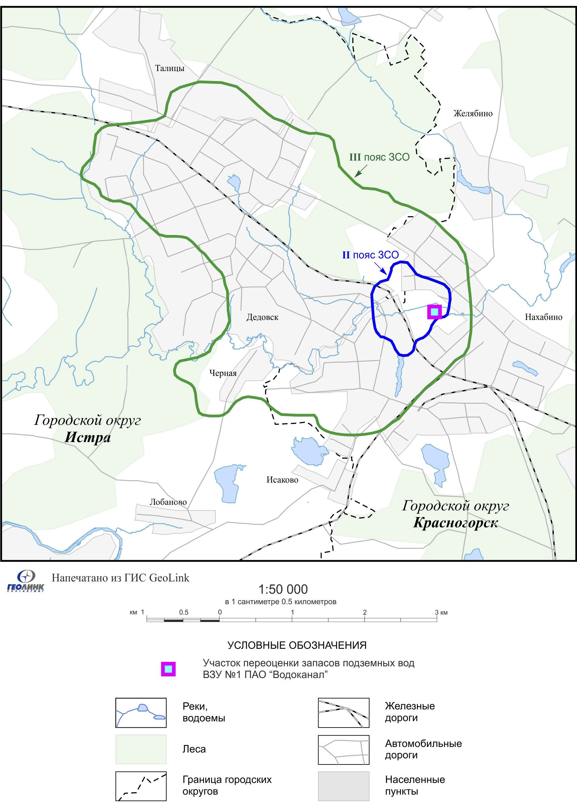
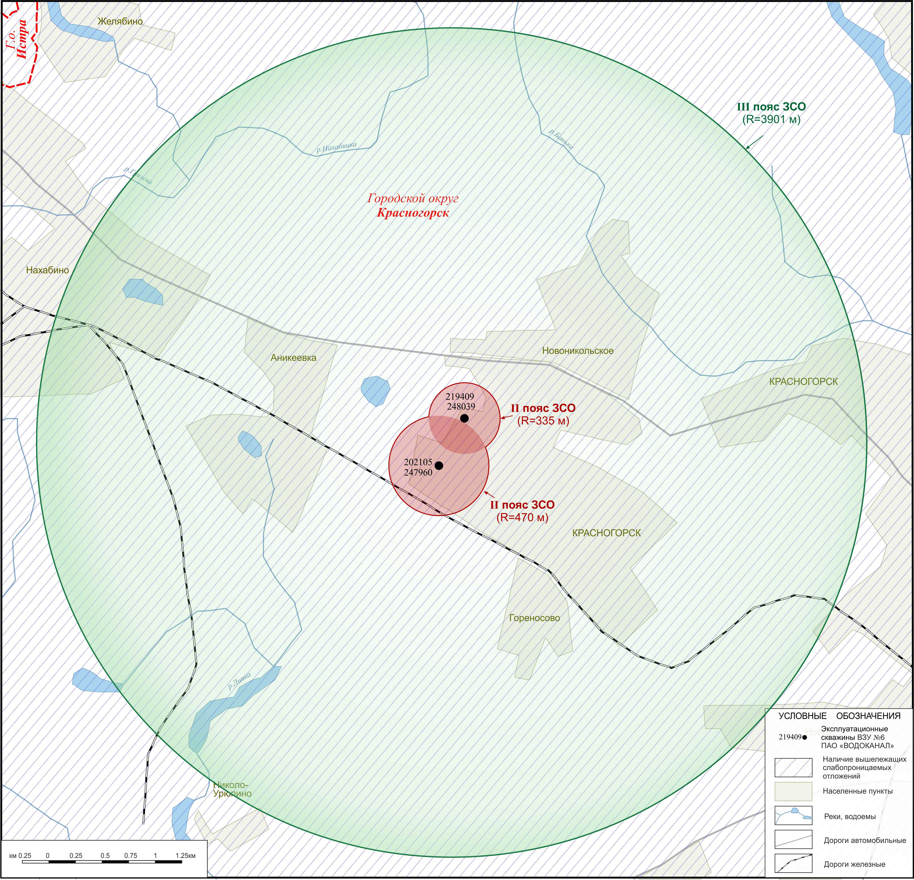
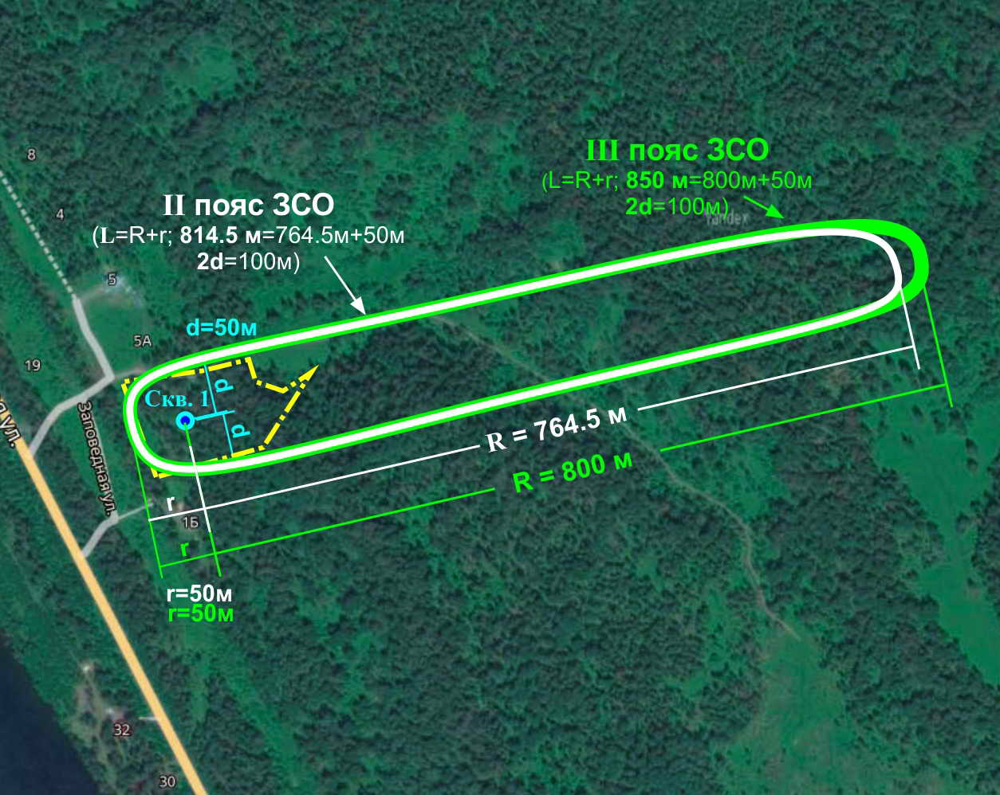

О компании
ЗАО "Геолинк Консалтинг" (до 2002 года – отделение гидрогеологии АОЗТ СП "Геолинк") работает на рынке услуг в сфере изучения, использования и охраны подземных вод с 1989 года. Многие годы компания является одним из ведущих российских производственных предприятий в области гидрогеологии.
Высокий уровень подготовки специалистов-гидрогеологов, многолетний опыт работы в основных направлениях деятельности компании, а также активное применение современных методов исследований и информационных технологий позволяют эффективно решать задачи любой сложности.
За годы своей деятельности компания успешно реализовала более 800 проектов на территории Российской Федерации, охватывающих широкий спектр гидрогеологических задач.
Наша миссия – сохранение рационального, безопасного и долгосрочного использования подземных вод.
Разрешительная документация:
Услуги
Мы предоставляем следующие услуги:
- Составление гидрогеологических заключений
- Получение лицензий на пользование недрами (подземные воды)
- Разработка проектов зон санитарной охраны (ЗСО) водозаборов подземных вод
- Разработка и согласование проектной документации на геологическое изучение, разведку подземных вод (Проект ГРР)
- Подсчёт (оценка, переоценка) запасов подземных вод с прохождением Государственной экспертизы запасов полезных ископаемых и подземных вод
- Разработка и согласование технических проектов на разработку месторождений подземных вод (Технический проект водозабора)
- Геофизические исследования в скважинах на воду
- Гидрогеологическое моделирование (геофильтрационное и геомиграционное)
- Составление и восстановление паспортов скважин
- Составление и согласование проектов ликвидационного тампонажа скважин
- Проектирование водозаборных узлов
- Поставка программного обеспечения для решения гидрогеологических задач
Продукты
Программная система гидрогеологического моделирования (Гидрогеологическое моделирование) – ModTech
Профессиональный инструмент для моделирования фильтрации и массопереноса. Система позволяет решать широкий круг гидрогеологических задач и включает в себя:
Моделирование фильтрации:
- Методом Чебышева с двойной точностью (CDPA; Geolink);
- Методом множественных сеток, геометрический (GMG; Geolink);
- Средствами пакета MODFLOW (PCG, SIP, SSOR, LMG, GMG).
Моделирование массопереноса:
- MT3DMS, FSM.
Географическая информационная система GeoLink (ГИС GeoLink)
ГИС GeoLink — полнофункциональная географическая информационная система, позволяющая решать как типовые для современных ГИС задачи, так и специфические задачи в сфере природопользования и изучения геологической среды. Данный инструмент используется для:
- создания и визуализации картографических данных;
- подготовки исходных данных для моделирования;
- визуализации результатов моделирования.
Условия поставки программного обеспечения
- ModTech приобретается по одной лицензии на одно рабочее место
- Активация — по уникальному ключу для конкретного компьютера
- Цены указаны в рублях с учётом НДС
- В стоимость входят консультации по установке и активации ПО.
Цены на программное обеспечение
| Программное обеспечение | Цена, ₽ |
|---|---|
|
ModTech. Стандартный комплект • Моделирование геофильтрации |
135 000 |
|
ModTech. Расширенный комплект • Моделирование геофильтрации • Моделирование массопереноса |
191 520 |
| ГИС GeoLink Бесплатное приложение в составе ModTech |
0 |
Скидки
- дополнительные лицензия: скидка 15%
- 2 и более копии программных продуктов единовременно: скидка от 20%
- Учебные заведения: скидка от 25% (только для учебных целей)
Наши работы
За более чем 30 лет деятельности компания реализовала более 800 проектов по всей территории России. Ниже — основные направления и примеры выполненных работ.
Подсчёт (оценка, переоценка) запасов подземных вод с прохождением Государственной экспертизы запасов полезных ископаемых и подземных вод
ЗАО «Геолинк Консалтинг» накопило большой опыт работ по подсчёту (оценке, переоценке) запасов подземных вод для питьевого и технического водоснабжения. Мы успешно реализуем проекты любого масштаба: от одиночных скважин до крупных водозаборных узлов.
Только за период с 2002 по 2025 гг. нами разведаны и поставлены на государственный учёт балансовые запасы подземных вод по 159 объектам в количестве 3,659 млн. м³/сут, подтверждённые Государственной экспертизой запасов полезных ископаемых и подземных вод.
Гидрогеологическое моделирование (геофильтрационное и геомиграционное)
В своей практике ЗАО «Геолинк Консалтинг» широко применяет математическое моделирование для решения разнообразных задач гидрогеологии, инженерной геологии, геоэкологии:
Разработка гидрогеологических моделей месторождений твердых полезных ископаемых
- для оценки водопритоков в горные выработки;
- для выбора и обоснования оптимальных методов осушения горных выработок, отведения дренажных вод;
- для оценки влияния разработки месторождения на гидрогеологические условия и различные компоненты окружающей среды;
- для оценки последствий ликвидации горных выработок;
- для оценки влияния мест складирования отходов (отстойники, шламохранилища, хвостохранилища и т. д.) на окружающую среду.
Разработка гидрогеологических моделей месторождений подземных вод
- для целей оценки и переоценки запасов питьевых и технических подземных вод;
- для оценки ресурсного потенциала подземных вод;
- для определения размеров зон санитарной охраны водозаборных узлов;
- для обоснования оптимальных схем эксплуатации водозаборных узлов и дренажных сооружений;
- создание постоянно действующих моделей (ПДМ) для решения задач управления использованием ресурсов подземных вод.
Разработка гидрогеологических моделей для обоснования инженерных мероприятий при строительстве
- оценка водопритоков в строительные котлованы и барражного эффекта при подземном строительстве;
- прогноз подтопления территорий;
- обоснование защитных мероприятий при строительстве;
- реконструкция водоёмов.
Разработка гидрогеологических моделей участков техногенного загрязнения подземных вод
- прогноз миграции загрязнения подземных вод и оценка воздействия на окружающую среду;
- обоснование системы мониторинга, локализации и ликвидации загрязнения.
Разработка проектов зон санитарной охраны (ЗСО) водозаборов подземных вод
ЗАО «Геолинк Консалтинг» выполняет разработку и согласование проектов организации зон санитарной охраны (Проект ЗСО) в установленном законодательством порядке.
В зависимости от сложности гидрогеологических условий и водохозяйственной обстановки, определение размеров ЗСО при проектировании осуществляется нами аналитическими, графоаналитическими (с помощью программного комплекса АНСДИМАТ) расчётами, а также методом математического моделирования (ModTech).
За годы своей деятельности нашими специалистами разработано и успешно согласовано свыше 100 проектов ЗСО.



Проектирование водозаборных узлов
Одним из направлений деятельности ЗАО «Геолинк Консалтинг» является комплексное проектирование водозаборных узлов и очистных сооружений. Мы выполняем полный комплекс работ: от инженерных изысканий до прохождения необходимых экспертиз и получения согласований.
Проектная документация составляется в соответствии с Постановлением Правительства Российской Федерации от 16.02.2008 № 87 «О составе разделов проектной документации и требованиях к их содержанию».
Организация имеет действующие сертификаты ИСО и допуски СРО на проектирование и инженерные изыскания.
Геофизические исследования в скважинах на воду
ЗАО «Геолинк Консалтинг» оказывает услуги по проведению комплекса геофизических исследований в водозаборных скважинах, направленных на изучение геологического разреза, определение интервалов и интенсивности водопритока и оценку их технического состояния. Работы проводятся сертифицированным оборудованием, имеющимся у компании.
Применимые методы исследований:
- Гамма-каротаж (ГК)
- Кавернометрия (КМ)
- Локация муфт (ЛМ)
- Термометрия (ТМ)
- Резистивиметрия (РК)
- Расходометрия (РМ)
- Расходометрия термоиндуктивная (СТИ)
- Видеокаротаж (ВК)
Контакты
Рабочий адрес:
Россия, Москва, Варшавское шоссе, д. 35, стр. 1
(бизнес-центр Ривер Плаза)
Почтовый адрес:
117105, Москва, Варшавское шоссе, д. 35, стр. 1
Телефон: +7 (495) 380-16-80
Email: info@geolink-group.com
Режим работы
Пн.-пт. с 9:00 до 18:00
Сб.-вс. — выходные